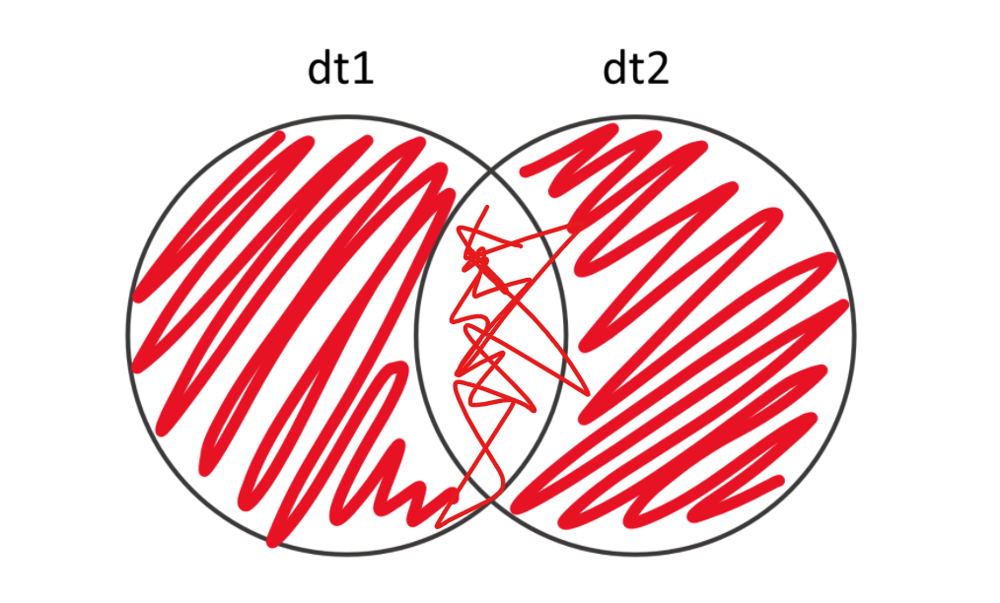
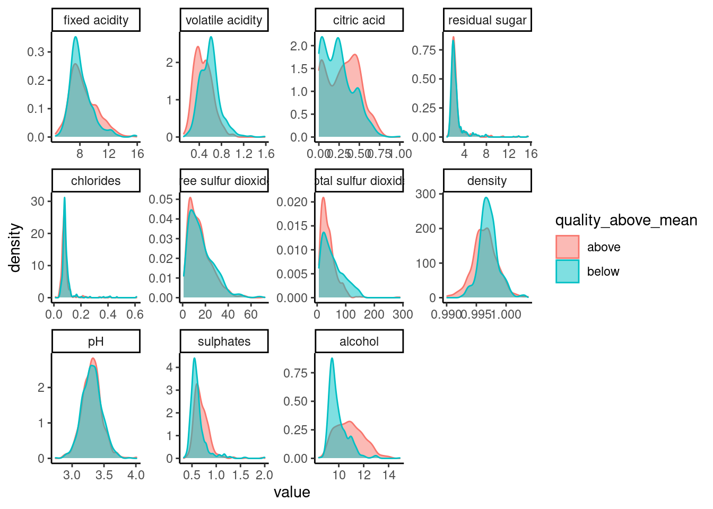

8 Слияние и преобразование табличных данных
library(data.table)
library(ggplot2)8.1 Слияние и преобразование табличных данных
Один из больших плюсов использования R - то, что с его помощью можно очень гибко менять формат ваших данных - соединять несколько таблиц воедино, считать для них какие-то специфические показатели и преобразовывать. Именно это мы научимся делать в этой главе.
8.1.1 Соединение двух таблиц в одну: простой случай.
Самый простой случай, в котором нам нужно соединить две таблицы в одну, выглядит так: у вас есть две таблицы (например, по одному от каждого человека, который прошёл ваш эксперимент), которые вы хотите соединить в одну. У обеих таблиц одинаковые имена колонок, и в итоге вы хотите получить одну таблицу, в которой будет столько же колонок, а строки из первоначальных таблиц “подклеены”. Это делается с помощью функции rbind(). r здесь это указание на склейку по строкам (rows).
Давайте посмотрим:
dt1 <- data.table(a = 1:3, b = c('a', 'b', 'c'))
dt2 <- data.table(a = 4:6, b = c('d', 'e', 'f'))
rbind(dt1, dt2)И даже если порядок столбцов различается, всё сработает как надо - rbind объединит колонки с одинаковыми именами:
dt1 <- data.table(a = 1:3, b = c('a', 'b', 'c'))
dt2 <- data.table(b = c('d', 'e', 'f'), a = 4:6)
rbind(dt1, dt2)Кайф.
Имейте в виду, что rbind() не знает, что делать, если в одной таблице колонок больше, чем в другой. Если вы запустите вот этот код у себя, он выдаст ошибку:
dt1 <- data.table(a = 1:3, b = c('a', 'b', 'c'), c = c(TRUE, FALSE, TRUE))
dt2 <- data.table(b = c('d', 'e', 'f'), a = 4:6)
rbind(dt1, dt2)Неожиданный результат может получиться, и если в колонках, которые надо соединить разные типы данные. Например, здесь в первой таблице числа в колонке a, а во второй - логические переменные в той же таблице a. В результате rbind() постарается привести данные из обеих колонок к одному типу данных. Как превратить 3 или 2 в логическую переменную, непонятно, а вот TRUE можно записать как 1 и FALSE как 0, так что в склеенной таблице в колонке a будут лежать числа даже там, где были тру и фолсы. Обращайте на это внимание, не дайте себя обмануть!
dt1 <- data.table(a = 1:3, b = c('a', 'b', 'c'))
dt2 <- data.table(b = c('d', 'e', 'f'), a = c(TRUE, FALSE, TRUE))
rbind(dt1, dt2)Точно так же, как по строкам, мы можем “склеить” таблицы по колонкам - с помощью функции cbind(), где c это column, колонка:
dt1 <- data.table(a = 1:3, b = c('a', 'b', 'c'))
dt2 <- data.table(c = 4:6, d = c('d', 'e', 'f'))
cbind(dt1, dt2)Когда нам может пригодиться cbind()? Например, если у вас есть одна таблица, в которой записан возраст всех испытуемых, и вторая, в которой записаны их ответы на вопросы опросника, и вы хотите получить одну таблицу, в которой есть вся информация вместе. Но! Имейте в виду, что cbind() просто склеивает колонки по порядку, никак не проверяя, совпадают ли какие-нибудь значения в строчках.
Давайте приведу пример, что это значит. В dt1 я сохраню возраста испытуемых (в колонку age) и их имена (в колонку name). А в dt2 - сколько каждый испытуемый решил задачек в моём эксперименте (в колонку problems_solved. Мария справилась лучше всех, ничего себе! Наверное, все Марии гениальны…) и снова их имена в колонку names. Обратите внимание: в дата.тейбле с возрастами Василий второй и Вольфганг третий, а в дата.тейбле с данными о решении задачек - наоборот. Что будет, если я соединю эти дата.тейблы в один с помощью cbind()?
dt1 <- data.table(age = c(18,20,98), name = c('Maria', 'Vasiliy', 'Wolfgang'))
dt2 <- data.table(problems_solved = c(146, 10, 15), name = c('Maria', 'Wolfgang', 'Vasiliy'))
cbind(dt1, dt2)А вот что: во второй строке будет лежать возраст Василия, но количество решённых задачек - Вольфганга. А ведь эти два человека явно живут совсем разные жизни! Кроме того, в получившемся дата.тейбле у нас две колонки с одинаковыми именами - тоже проблема. Можно придумать всякие окольные решения (например, сначала отсортировать обе таблицы по колонке имён, а уже потом соединить и удалить дублирующуюся колонку), но есть более простой путь - использовать функцию
merge().
8.1.2 merge() и четыре разных соединения
Более умное соединение по столбцам можно выполнять с помощью функции merge(). Давайте для начала посмотрим, что она сделает с нашей проблемой Вольфганга и Василия:
dt1 <- data.table(age = c(18,20,98), name = c('Maria', 'Vasiliy', 'Wolfgang'))
dt2 <- data.table(problems_solved = c(146, 10, 15), name = c('Maria', 'Wolfgang', 'Vasiliy'))
merge(x = dt1, y = dt2)Воу! Круто, правда? :D merge() совершенно самостоятельно обнаружил, что у в обеих таблицах есть колонка с одинаковым названием - name - и использовал её в качестве колонки ключей, то есть указателя соответствия между таблицей один и таблицей два. Это происходит по умолчанию - merge() находит колонки с одинаковыми именами и соединяет по ним. Но можно задавать колонки ключей и вручную, с помощью аргумента by. Это может пригодиться, например, если в таблице несколько колонок с одинаковыми именами, но “ключом” должна быть только одна из них.
Представьте, что наша троица (Мария, Василий и Вольфганг) проходили эксперимент два раза - они пришли в первый раз, сказали нам свой возраст, порешали задачки. Эти данные хранятся в dt1. Через день они пришли ещё раз и снова порешали задачки. Эти данные хранятся в dt2. То есть, в обеих таблицах есть колонка problems_solved, но использовать её как ключ мы совершенно не хотим - более того, мы хотим, чтобы в финальном дата.тейбле осталась и problem_solved из первой таблицы, и problem_solved из второй таблицы. Тут-то нам и пригодится by:
dt1 <- data.table(age = c(18,20,98), name = c('Maria', 'Vasiliy', 'Wolfgang'), problems_solved = c(150, 11, 9))
dt2 <- data.table(problems_solved = c(146, 10, 15), name = c('Maria', 'Wolfgang', 'Vasiliy'))
merge(x = dt1, y = dt2, by = 'name')Обратите внимание, что колонка problems_solved из dt1 в соединённом дата.тейбле называется problems_solved.x, а problems_solved из dt2 называется problems_solved.y. Здесь x это первая таблица, которую мы даём на вход функции merge(), а y - вторая. То есть, команда merge(dt2, dt1) поменяла бы названия колонок местами: problems_solved из dt1 в соединённом дата.тейбле стала бы problems_solved.y, а problems_solved из dt2 стала бы problems_solved.x.
Вопрос на засыпку: проверьте, что будет, если в последнем примере не уточнять by = “name”. Почему?
Если вы хотите использовать в качестве ключа несколько колонок сразу, то можно просто передать by вектор их имён на вход: by = c("name", "ID").
Вообще лучше всегда эксплицитно уточнять, какую колонку (или какие колонки) надо использовать как ключ - better safe than sorry :)
Кроме того, если одна и та же колонка в двух таблицах называется по-разному, это тоже не проблема. Тогда нужно использовать by.x и by.y вместо by. В by.x уточняем, как колонка-ключ называется в первом дата.тейбле, в by.y - как во втором. И никаких проблем.
dt1 <- data.table(age = c(18,20,98), name = c('Maria', 'Vasiliy', 'Wolfgang'), problems_solved = c(150, 11, 9))
dt2 <- data.table(problems_solved = c(146, 10, 15), imena = c('Maria', 'Wolfgang', 'Vasiliy'))
merge(x = dt1, y = dt2, by.x = 'name', by.y = 'imena')В примере, который мы рассматривали до сих пор, в обеих таблицах были одни и те же испытуемые, или, более глобально, одинаковое количество одних и тех же наблюдений. Это далеко не всегда так. Давайте рассмотрим новый пример: у нас всё ещё эксперимент с решением задач. В первый день мы записываем возраст испытуемых и сколько задач они решили. Это dt1. Во второй мы тоже записываем, сколько задач решил каждый испытуемый, но ещё спрашиваем их рост. Это dt2. Кроме того, часть испытуемых пришла только в первый день, часть - только во второй, и часть в оба дня. Давайте сделаем такие дата.тейблы:
dt1 <- data.table(age = c(18, 20, 98, 40, 19), names = c('Maria', 'Vasiliy', 'Wolfgang', 'Dana', 'Boris'), problems_solved = c(150, 11, 9, 20, 15))
dt1dt2 <- data.table(names = c('Maria', 'Vasiliy', 'Wolfgang', 'Katerina', 'Vladimir'), problems_solved = c(150, 11, 9, 11, 40), height = c(160, 180, 173, 167, 178))
dt2Что мы видим? Мария, Василий и Вольфганг пришли в оба дня. Дана и Борис - только в первый. А Катерина и Владимир - только во второй. Две таких таблицы можно соединить четырьмя разными способами. Я не могу найти для них никаких симпатичных названий на русском, так что буду использовать англоязычные названия.
8.1.3 Inner join
Inner join
Итак, первый способ соединить две таблицы из нашего примера это inner join (внутреннее слияние?..) - когда мы оставляем только те наблюдения, которые есть в обеих таблицах. То есть, на всех испытуемых, которые пришли только в один из дней, мы забиваем, нам необязательные не нужны, зато склеиваем воедино все данные о троице пришедших в оба дня. По умолчанию merge() делает именно inner join:
merge(dt1, dt2, by = 'names')8.1.4 Outer join

Outer join, наоборот, оставит в смёрдженной таблице только те наблюдения, которые уникальны или для первой, или для второй таблицы - то есть, в нашем примере, всех, кроме Марии, Василия и Вольфганга. Чтобы выполнить такое соединение в функции merge(), надо уточнить внутри функции all = TRUE, вот так:
merge(dt1, dt2, all = TRUE, by = 'names')Обратите внимание: во-первых, problems_solved из обеих таблиц помечены как problems_solved.x и problems_solved.y. Во-вторых, мы записывали возраст только в первый день, а рост только во второй. То есть, если испытуемый приходил только в первый день (как Дана и Борис), то про их рост мы ничего не знаем, и в этой колонке у них NA. То же самое с возрастом у Катерины и Владимира, которые приходили только во второй день.
8.1.5 Left join
Left join
Left join оставит только те наблюдения, которые есть в первой таблице, и добавит для них информацию из второй таблицы. Для этого надо уточнить в merge(), что all.x = TRUE - то есть, мы хотим все наблюдения из x, из первой таблицы:
merge(dt1, dt2, all.x = TRUE, by = 'names')8.1.6 Right join
Right join
Правый джоин - противоположность левого: он оставляет только наблюдения (= испытуемых) из второй таблицы, добавляя для них информацию из первой. Чтобы соединить так, надо в merge() уточнить, что all.y = TRUE:
dt1 <- data.table(age = c(18,20,98), name = c('Maria', 'Vasiliy', 'Wolfgang'), problems_solved = c(150, 11, 9))8.1.7 Широкие или длинные данные
Ещё один тип преобразования, который нередко нужно совершать, это превращение данных из длинных в широкие или обратно. Что такое длинные или широкие данные?
Мы сейчас всю дорогу работали с широкими данными, в которых каждая строка это наблюдение (например, один испытуемый), а каждая колонка это переменная (например, возраст).
wideDt <- data.table(age = c(18,20,98), name = c('Maria', 'Vasiliy', 'Wolfgang'), problems_solved = c(150, 11, 9))
wideDtВ длинном формате данных на каждое наблюдение приходится несколько строчек, потому что вместо того, чтобы хранить каждую переменную в отдельной колонке, мы делаем её отдельной строкой. То есть, если про Василия мы знаем его возраст и сколько задач он решил, то в одной строке мы запишем возраст, а в другой - количество решённых задач. Если мы ещё знаем, например, его рост, то и рост станет отдельной строкой. Для этого мы создадим две колонки: variable и value. В value мы будем хранить, собственно, значения (число лет, число решённых задач и т.п.), а в variable - уточнять, что за значение мы храним в этой строке. Давай разберём на примере:
longDt <- melt(wideDt, id.vars = 'name', measure.vars = c('age', 'problems_solved'))
longDtСравните wideDt и longDt. Осознайте, что в обоих содержится одна и та же информация. Примите это.
Для разных задач вам могут потребоваться как широкий, так и длинный формат данных, так что очень полезно уметь преобразовать один в другой.
8.1.8 Из широких в длинные: melt()
Как вы могли заметить, в последнем куске кода я использовала функцию melt(), чтобы перевести данные из широкого формата в длинный. Для этого мне надо указать колонку-идентификатор (то есть ту, которая остаётся в широком формате.Таких колонок может быть несколько) и колонки с измерениями - то есть те, которые мы как раз хотим переформатировать. Колонка-идентификатор указывается в аргументе id.vars с помощью вектора имён колонок, а колонки с измерениями - так же, но в аргументе measure.vars.
melt(wideDt, id.vars = 'name', measure.vars = c('age', 'problems_solved'))Если я выберу другую колонку в id.vars, то получу совсем другой результат:
melt(wideDt, id.vars = 'age', measure.vars = c('name', 'problems_solved'))## Warning in melt.data.table(wideDt, id.vars = "age", measure.vars = c("name", :
## 'measure.vars' [name, problems_solved] are not all of the same type. By order of
## hierarchy, the molten data value column will be of type 'character'. All measure
## variables not of type 'character' will be coerced too. Check DETAILS in ?
## melt.data.table for more on coercion.Так как у нас нет испытуемых с одинаковым возрастом, то для каждого значения возраста мы, по сути, храним информацию об одном испытуемом. Давайте сначала сгруппируем людей по возрасту (старше среднего или младше среднего), а потом трансформируем данные в длинный формат по этой группировке:
wideDt[, age_above_mean := age > mean(age)]
wideDtТеперь в колонке age_above_mean у нас лежит TRUE, если возраст выше среднего в таблице, и FALSE, если ниже. Давайте используем её как id.vars.
melt(wideDt, id.vars = 'age_above_mean', measure.vars = c('age', 'name', 'problems_solved'))## Warning in melt.data.table(wideDt, id.vars = "age_above_mean", measure.vars
## = c("age", : 'measure.vars' [age, name, problems_solved] are not all of the
## same type. By order of hierarchy, the molten data value column will be of type
## 'character'. All measure variables not of type 'character' will be coerced too.
## Check DETAILS in ?melt.data.table for more on coercion.В целом, если указать только id.vars, то melt() автоматически использует все оставшиеся колонки как measure.vars:
melt(wideDt, id.vars = 'age_above_mean')## Warning in melt.data.table(wideDt, id.vars = "age_above_mean"):
## 'measure.vars' [age, name, problems_solved] are not all of the same type. By
## order of hierarchy, the molten data value column will be of type 'character'.
## All measure variables not of type 'character' will be coerced too. Check DETAILS
## in ?melt.data.table for more on coercion.При этом мы можем выбрать только часть колонок как measure.vars, и тогда остальные в трансформированную длинную таблицу не войдут:
melt(wideDt, id.vars = 'age_above_mean', measure.vars = 'problems_solved')8.1.9 Качественные вина
## Warning in melt.data.table(wine, id.vars = "quality_above_mean"):
## 'measure.vars' [fixed acidity, volatile acidity, citric acid, residual
## sugar, ...] are not all of the same type. By order of hierarchy, the molten
## data value column will be of type 'double'. All measure variables not of type
## 'double' will be coerced too. Check DETAILS in ?melt.data.table for more on
## coercion.
Скачайте с Каггла датасет о красных винах. Разделите вина на “лучше среднего” и “хуже среднего” по экспертной оценке качества (колонка quality) и постройте такой же график, как сверху. Для этого вам нужно будет перевести дата.тейбл в длинный формат.
Подсказка: вам понадобится geom_density() и facet_wrap() с аргументом scales = ‘free’).
8.1.10 Из длинных в широкие: dcast()
Конечно же, данные можно преобразовать и обратно из длинного формата в широкий. Это можно сделать с помощью функции dcast(), вот так:
dcast(longDt, name ~ variable, value.var = "value")То, как именно преобразовать данные, в dcast() указывается с помощью формулы, здесь name ~ variable. Формула это особый синтаксис, в котором, если попросту, можно прочитать тильду ~ как “в зависимости от”. Вы ещё столкнётесь с формулами в разделе про линейные регрессии. Конкретно в dcast() слева от тильды мы указываем колонку-идентификатор, а справа - колонку с будущими именами колонок в трансформированной широкой таблице. В аргументе value.var мы указываем колонку со значениями, которые нужно будет положить в свежесозданные колонки.
Что, например, можно сделать с dcast()? Ну, например, сделать вот так:
dt <- fread("about_us_eng.csv")hogwartsByMonth <- dt[, .N, by = .(hogwarts, month)]
dcast(hogwartsByMonth, hogwarts ~ month, value.var = "N")Переменная, которую вы указываете до тильды, так и останется колонкой, а вот значения переменной, указанной после тильды, превратятся в имена новых колонок. Смотрите, что произойдёт, если я поменяю их местами:
dcast(hogwartsByMonth, month ~ hogwarts, value.var = "N")
Посчитайте среднюю длину волос в нашем dt в зависимости от того, что они любят, колу или пепси, и того, сколько у них кошек (ответ про “Это личное” уберите). Сделайте табличку, в которой количество кошек меняется по строкам, а любовь к газировке - по столбцам.